V-Ray Material Library Browser
This page provides information on the V-Ray Material Library Browser, available for 3ds Max 2018 and above.
Overview
V-Ray 5 comes with its own extensive V-Ray Material Library designed to cover detailed resolution for your realistic renders. V-Ray Material Library Browser eases navigation in this library by providing high quality material previews, content filtering and quick search of the hundreds of materials available.
UI Path: ||V-Ray Toolbar|| > V-Ray Material Library Browser
||V-Ray Toolbar|| > V-Ray Material Library Browser

If the material library has not been installed together with your V-Ray 5, this button will download it for you. Once the library is available, it serves to open the V-Ray Material Library Browser.
Material Library Installation
By default, the material library is downloaded as part of the V-Ray installation process.
If you skip to download it then, you can initiate the download process by pressing the V-Ray Material Library Browser button in the V-Ray Toolbar.
Alternatively, you can download it manually by executing the mtllib.exe file located in C:\Program Files\Chaos Group\V-Ray\3ds Max NNNN\bin. For 3ds Max 2022: C:\ProgramData\Autodesk\ApplicationPlugins\VRay3dsMax2022\bin.
The default download directory is C:\Users\USERNAME\Documents\V-Ray Material Library. If you need to change it, use the following command line:
mtllib.exe -targetDir="C:\path\to\V-Ray Material Library"
If the file is executed directly, without a command line, the downloader checks for the VRAY_MTLIB_DOWNLOAD_DIR environment variable. You can set it typing the following command into a Command Prompt Window:
set VRAY_MTLIB_DOWNLOAD_DIR="C:\path\to\V-Ray Material Library"
If none of the above is set, the downloader uses the last download location stored in the registry. Navigate to "HKCU\Software\Chaos Group\V-Ray Material Library", REG_SZ key "Download Path". The "Download Path" key is created or updated after successful material library download.
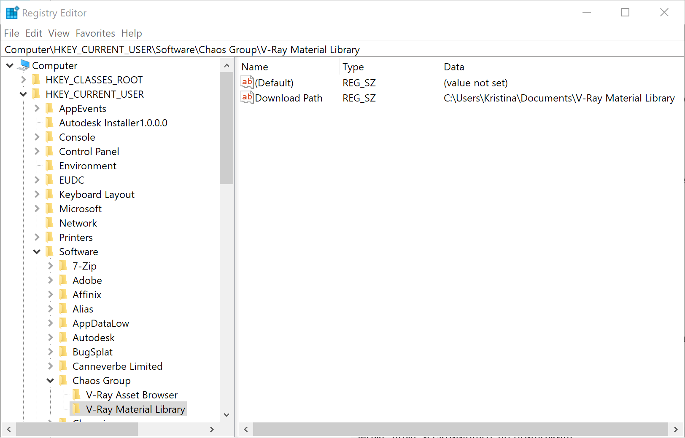
The default location is C:\Users\USERNAME\Documents\V-Ray Material Library.
After the download is complete, make sure that 3ds Max knows where to look for the library assets. In File > Project > Configure Project Paths > External Files add the Material Library folder.
Parameters
The V-Ray Material Library Browser consists of a toolbar with quick search and filtering options, a V-Ray Material Library, Preview section, and Favorites section.
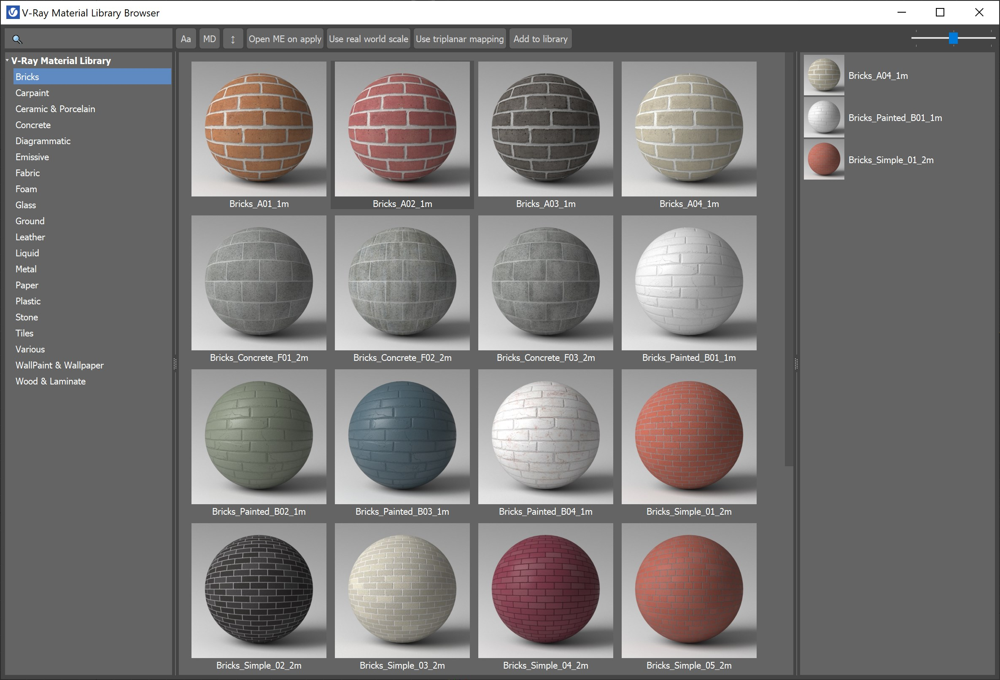
|
|
A Search bar where you can specify a filter criteria with wildcards. |
|
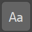 |
Filter case sensitivity. |
|
|
Filters by metadata. |
|
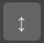 |
Sorts by name. |
|
|
Opens the Material Editor when applying a material to selection. |
|
|
Enables the real-world scale option of VRayBitmaps (when adding the material to a scene or selection). |
|
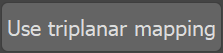 |
Enables triplanar mapping on VRayBitmaps (when adding the material to scene or selection). |
|
|
Opens the V-Ray Material Library Companion Tool where you can add the content to asset library. |
|
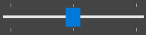 |
Specifies thumbnails size. |

In order for the Use real world scale option to work properly with the materials from the custom libraries, the material names should contain the map dimensions, e.g. Tiles_130cm.
V-Ray Material Library Companion Tool
Companion Tool Usage Notes
The companion tool is meant to automate the addition of custom material libraries to the Chaos Material Library.
It works on both material library .mat files, and on .max scene files, and it's able to scan folders and subfolders for those file types, so to enable for massive processing of assets.
Important Usage Limitations
There are currently two important limitations which should be heeded:
1) Material names: the following characters aren't allowed in material names: / : \ ? " < > | *
If they are present, the tool doesn't render the preview to disk in order to avoid file writing errors, and the library shows a missing preview file icon.
2) Incoming .mat and .max files paths and names: When the tool builds the .mat/.max file list(s) to be processed, the pathing information cannot be carried over to the library.
This means that files with different paths, but identical names are treated as another copy of the same file.
The tool can only try and overwrite (or not, as the user chooses) what is already in the Chaos Material Library root, as the full pathing information isn't transferable to the library.
When mass-processing assets, please ensure they do not share the same file name, even under a different path.
For example:
Take these two files as possible inputs:
C:\matlibs\Oaks\woodMat.mat
C:\matlibs\Redwoods\woodMat.mat
The script correctly processes the first input (collection happens alphabetically), but finds "woodMat.mat" already in the library root by the time it processes the second.
This triggers one of the three conditions for .mat files overwrite:
-
Always – the .mat file in the library is overwritten with the new one, old preview files are left in the preview folder;
-
Never – the new .mat file is skipped, without any rendering taking place;
-
Ask – lets you choose one of the two previous options.
Pick a Material Library – Click to select a single file .mat (matlib) file, Ctrl+click to scan a folder, Alt+click to recursively scan a folder and all the subfolders.
Pick a Max file – Click to select a single .max file to create a material library from it, Ctrl+click to select a folder and scan it for .max files, Alt+click to also parse all the subfolders for .max files.
Process File(s) – Processes the material library/max file.
Material libraries loaded with the Pick a Material Library button are added to the Material Browser.
Max files added with the Pick a Max file button are used to create a material library with the same name as the max file.
If both file lists are filled, the tool will process all the .mat files first, and then all the .max files.
Stopping the process
The processing can be halted by standing (not tapping) on the ESC key, until the Chaos Library window pops up.
The Maxscript Listener will contain information about the process progress (f.e. which material library/material is being processed).
Render Resolution – Specifies the resolution for the samples. The Chaos Library's default value is 512px.
Render Quality – Specifies the quality for the samples:
Final – Renders with the Chaos Library's Default Values
Preview – Uses BF/BF and 4 subdivs for AA.
Low resolution and preview quality, used in conjunction with the tool's ability to operate on many .max and .mat files at once, allows for the rapid generation of many samples.
A second pass, after reviewing the low quality ones, can then be run at the default (or higher) resolution and quality.
Copy Textures to the Library – When enabled, copies all textures to the Library's Asset folder. It also automatically re-paths all texture files.
Also convert them to tiled .TX format – When enabled, converts all textures to tiled .tx format. This is not implemented yet and the option is grayed out.
Overwrite Texture Files – Specifies whether to overwrite the texture files in the asset folder.
Overwrite Preview Files – Specifies whether to overwrite the .jpg images shown as material previews in the library.
Overwrite Matlib Files – Specifies whether to overwrite .mat files copied, or created, in the Material Library root folder.
Turn Off VFB – When enabled, turns off V-Ray VFB until the process is complete. This may help with focus stealing in some cases.
Turn Off History – When enabled, turns off V-Ray VFB History until the process is complete. This helps by not auto-saving the rendered previews in the VFB history.
Minimise Max – When enabled, minimises the Max window until the process is complete. This helps when setting up a low-priority background task (lowering process priority for the Max executable still needs to be done via Task Manager.).
When the Minimise Max option is enabled, note that it may be difficult or impossible to stop the process with the Esc key.
Save Current Settings as new Defaults – Saves the current settings as a new default preset.
Delete Settings and Reset – Deletes the current settings and resets them to factory defaults.
Note that the tool still remembers the last used path.
The ini file can be manually deleted from its location in "C:\Users\%USER%\AppData\Local\Autodesk\3dsMax\2022 - 64bit\ENU\plugcfg_ln\VRayMLCompanionTool.ini"
If the Move Textures to the Library option is enabled, the destination .mat file will automatically be overwritten, regardless of the user choice, to ensure the repathing of textures is saved correctly.
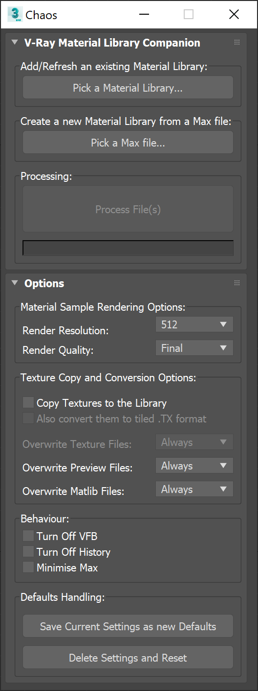
Context Menus
Right-click on a thumbnail in the V-Ray Material Library Browser opens a context menu where you can control the selected material:
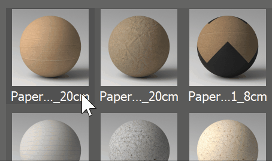
Preview – Opens a preview of the selected asset and shows basic information.
Add to material editor – Adds the asset node in the Material Editor.
Apply to selected object(s) – Applies the asset to a selected object(s) in the scene.
Add to favorites – Adds the selected asset to the Favorites panel on the right of the V-Ray Material Library Browser.
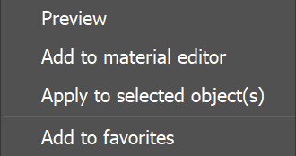
Right-click on a thumbnail in the Favorites panel opens a context menu with the following options:
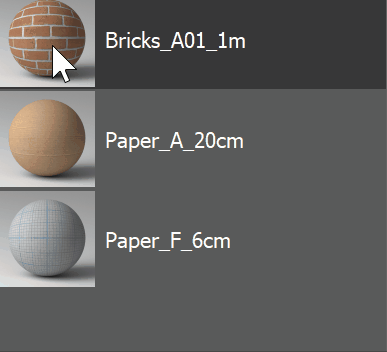
Preview – Opens a preview of the selected asset and shows basic information.
Browse to – Browses to the exact location of the asset in the V-Ray Material Library.
Apply to selection(s) – Applies the asset to a selected object(s) in the scene.
Add to material editor – Adds the asset node in the Material Editor.
Remove from favorites – Removes the selected asset from the Favorites panel.
Add all to material editor – Adds all assets from the Favorites panel to the Material Editor.
Clear favorites – Empties the Favorites panel.
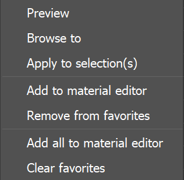
Notes
-
V-Ray Material Library Browser is not supported for 3ds Max versions earlier than 2018. The V-Ray Material Library can be used there by loading it from Material/Map Browser in 3ds Max material editor.
-
With V-Ray 5 Update 1, the V-Ray Asset Browser has been renamed V-Ray Material Library Browser.
-
User material libraries saved with newer versions of 3ds Max won't work in older host versions. For example, .mat files saved with 3ds Max 2021 and added to the V-Ray Material Library Browser will show errors in 3ds Max 2019 and won't appear in the library.
-
Note that Cosmos browser is using a built-in browser window in 3ds Max 2019 and newer, and opens an external window with previous 3ds Max versions.